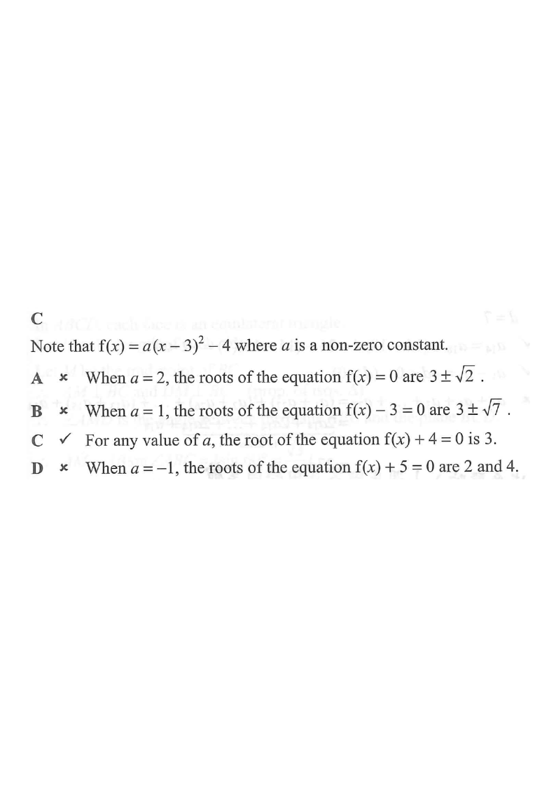

y = f(x), a = 1 y = f(x), a = 2 horizontal test line y = k axis of symmetry
HKDSE 2012 Paper 2 — Q34
Let $f(x)$ be a quadratic function.
If the coordinates of the vertex of the graph of $y=f(x)$ are $(3,-4)$, which of the following must be true?
A. The roots of the equation $f(x)=0$ are integers.
B. The roots of the equation $f(x)-3=0$ are rational numbers.
C. The roots of the equation $f(x)+4=0$ are real numbers.
D. The roots of the equation $f(x)+5=0$ are nonreal numbers.

Figure (original exam diagram)
1Write the vertex form.
Vertex Form of a Quadratic Function\(y=a(x-h)^{2}+k\)The vertex \((3,\,-4)\) fixes \(h=3\) and \(k=-4\), while \(a\neq0\) is left completely free.
A quadratic with vertex $(3,-4)$ must be of the form
$$f(x)=a(x-3)^2-4,$$
where $a$ is a non-zero constant. The value of $a$ is not given, so the answer must hold for every $a\neq 0$.
Hint: the vertex form $y=a(x-h)^2+k$ pins down $h$ and $k$ only — $a$ stays free.
2Test A: $f(x)=0$.
Solving a Squared Equation\(a(x-h)^{2}=c\ \Longrightarrow\ x=h\pm\sqrt{\dfrac{c}{a}}\)For \(f(x)=0\) here \(c=4\), so the roots \(3\pm\sqrt{\frac{4}{a}}\) depend on the unknown \(a\).
Solving $a(x-3)^2-4=0$ gives $(x-3)^2=\dfrac{4}{a}$, so
$$x=3\pm\sqrt{\frac{4}{a}}.$$
If $a=2$: $x=3\pm\sqrt{2}$, which is irrational.
✗ A is not always true.
Hint: $a$ can be chosen to make the roots irrational, so "are integers" fails.
3Test B: $f(x)-3=0$.
$a(x-3)^2-4-3=0 \Rightarrow (x-3)^2=\dfrac{7}{a}$, so
$$x=3\pm\sqrt{\frac{7}{a}}.$$
If $a=1$: $x=3\pm\sqrt{7}$, which is irrational.
✗ B is not always true.
Hint: same idea — with the right $a$ the roots are irrational, not rational.
4Test C: $f(x)+4=0$.
Repeated Root Condition\(a(x-h)^{2}=0\ \text{ and }\ a\neq0\ \Longrightarrow\ x=h\ \text{(repeated)}\)With \(f(x)+4=0\) the equation becomes \(a(x-3)^{2}=0\), so \(x=3\) for every \(a\neq0\).
$a(x-3)^2-4+4=0 \Rightarrow a(x-3)^2=0$.
Since $a\neq 0$, this forces $(x-3)^2=0$, so $x=3$ — a real (indeed repeated) root for any $a\neq0$.
✓ C must be true.
Hint: $f(x)+4=0$ raises the parabola by 4 units, so its vertex lands exactly on the $x$-axis.
If $a=-1$: $(x-3)^2=1 \Rightarrow x=2$ or $x=4$, which are real.
✗ D is not always true.
Hint: $f(x)+5=0$ lifts the parabola 5 units; whether it meets the $x$-axis depends on the sign/size of $a$.
Answer: C
PRACTICESimilar question — try it yourself
Question. It is given that the graph of \(y=f(x)\) has vertex \((2,\,5)\) and that \(f(x)=a(x-2)^{2}+5\), where \(a\neq0\). Which of the following must be true? A. \(f(x)=0\) has two distinct real roots. B. \(f(x)-5=0\) has exactly one real root. C. \(f(x)-6=0\) has two distinct real roots. D. \(f(x)+5=0\) has no real roots.
Show the worked solution
Step 1. B: \(a(x-2)^{2}+5-5=0\) gives \(a(x-2)^{2}=0\). Since \(a\neq0\), \((x-2)^{2}=0\), so \(x=2\) is the only root, repeated. B must be true.
Step 2. A: \(a(x-2)^{2}=-5\) needs \(\dfrac{-5}{a}\ge0\), i.e. \(a<0\). Take \(a=1\): no real root, so A is not always true.
Step 3. C: \(a(x-2)^{2}=1\) needs \(a>0\). Take \(a=-1\): no real root, so C is not always true.
Step 4. D: \(a(x-2)^{2}=-10\) has two real roots when \(a<0\), e.g. \(a=-2\) gives \(x=2\pm\sqrt{5}\), so D is not always true.